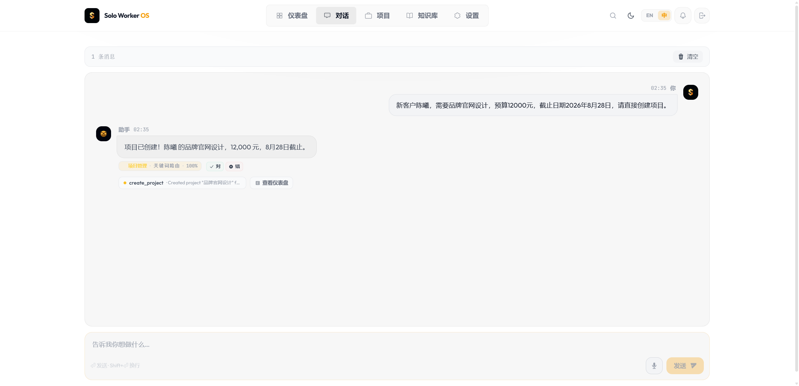
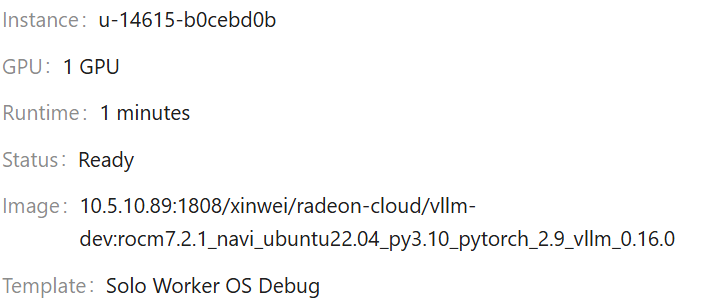
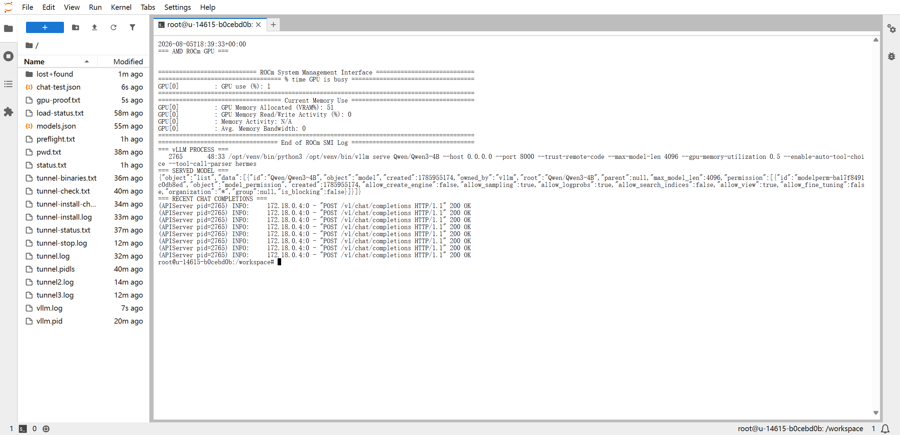

AMD AI DevMaster 2026 · Track 2
Solo
Worker OS
A private AI operations layer for freelancers — turning natural language into projects, contracts, invoices, payments, and business insight through a dedicated AMD Radeon GPU inference endpoint.

Natural language → structured business action
create_project · success
01 · Architecture
One agent interface, a complete private workflow
01
Solo UI
Chat, dashboard, projects, knowledge base, bilingual experience.
02
FunctionRouter
Keyword-first routing with LLM fallback and traceable decisions.
03
Specialist Agents
General, RAG, data analysis, writing, and quick-chat roles.
04
Business Layer
Tools, TF-IDF RAG, persistent memory, SSE streaming, audit trace.
05
Radeon Inference
Self-hosted Qwen3-4B on vLLM and ROCm through a private endpoint.
02 · Product
Agent capabilities built for real solo-business operations
14business tools for the full client-to-payment lifecycle
5specialist subagents with isolated prompts and tool access
57/57tests passing after local-provider integration
2memory backends: Supabase and private local JSONL
03 · Verified GPU
Measured evidence, not an architectural promise
Dedicated Radeon environment

ROCm 7.2.1Radeon vLLM image
1 GPUInstance status Ready
gfx1100AMD/ATI device
Inference process and successful requests

51% VRAMModel allocated on GPU
Qwen3-4BServed by vLLM
HTTP 200Chat completions succeeded
04 · Engineering
Practical decisions for stable single-GPU agent inference
Optimization choices
- Qwen3-4B selected for reliable tool calling within the available VRAM envelope.
- 4,096-token context and 768-token output cap prevent oversized agent requests.
- Thinking mode disabled to reduce latency and keep demo responses concise.
- vLLM PagedAttention, 0.5 GPU-memory utilization, and SSE streaming.
Privacy model
- No commercial third-party LLM API is required in the inference path.
- The model runs on a dedicated, participant-controlled Radeon GPU endpoint.
- Local JSONL mode removes the external database dependency for private deployment.
- Health checks expose provider, reachability, served model, and errors.